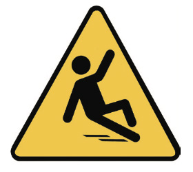
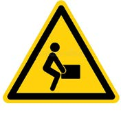
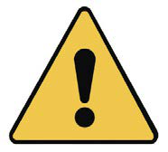

Activity 9
Walk around the school compound and identify the safety signs found there.
Types of safety signs
Safety signs are divided into four main types: warning signs, prohibition signs, mandatory signs and emergency signs. Each type has its own colour and shape to help people understand its meaning, based on the international safety rules.
Warning signs
Warning signs give alerts about dangers that might happen. They can be seen in different places like on roads, in the school compound or on things like waste bins.
Warning signs have a yellow colour background. They are triangular in shape, with a black picture and black borders. Figure 13 shows examples of warning signs.
Slippery floor

Toxic
Lift carefully

Danger
